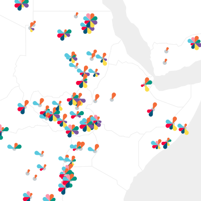
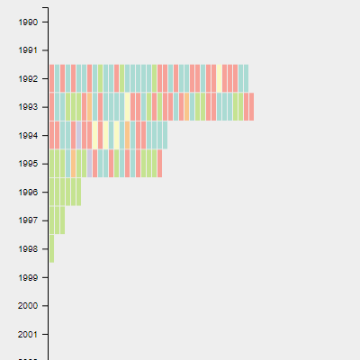

Visualizing Peace
Data Visualizations to Explore Peace Agreements Worldwide from 1990 through 2015
Agreements in Time and Space
A timeline and map of peace agreements that you may filter simultaneously by year, location, and topic.
Agreement Sequence Comparison
Three timelines of peace agreements for locations of your choice, colour-coded by agreement stage.
About
The Political Settlements Research Programme (PSRP) at the University of Edinburgh has created the PA-X Peace Agreements Database, which provides those studying and participating in peace processes with a repository of over 1,500 documents that address over 140 peace processes around the world between 1990 and 2015. The interactive visualisations on this website provide a more visual access to the database, complementing the Database's search interface.
The visualisations were originally developed by Lucy Havens and Mengting Bao in the summer of 2018, and updated by Sarah Schöttler in early 2019.
Visualizing Peace provides a map and timelines that illustrate temporal, geographic, and categorical trends in peace agreements. The map and timelines can be filtered by time, location, and category. Hovering and clicking on an agreement in any of the visualizations displays the agreement's details, with links to a digitized version of the document and its complete PA-X coding.
How to read the visualisations
With Visualizing Peace, you can view peace agreements across three dimensions: time, geography, and category.
Both visualisations have options for filtering displayed on the left, which allow you to view a subset of the data, e.g. a particular timeframe, specific countries or entities, or agreements with certain codes (categories) assigned.
To understand the codes assigned to each peace agreement as represented in the data visualizations, please refer to the PA-X Codebook.
Agreements in Time and Space visualizes agreements on a timeline and a map simultaneously.
On the map, flower-like graphics represent peace agreements,
with petals indicating how much detail the agreement contains about
codes in the left sidebar. The larger the petal, the more detail the
agreement has about the code associated with that petal's color.
The absence of a petal means the agreement does not address the
associated code at all. If an agreement does not address any of the codes, it is displayed as a grey dot.
The Agreement Sequence Comparison visualizes agreements on three
timelines, with one geographic location represented on each timeline.
You can select one location ("countries/entities") for each vertical timeline, and categories ("codes") to control which peace agreements the timeline and map display. Each rectangle on a timeline represents one peace agreement; the colour of each rectangle indicates the peace process stage the agreements is associated with. Hovering or clicking a rectangle displays the represented agreement's details in the left sidebar.